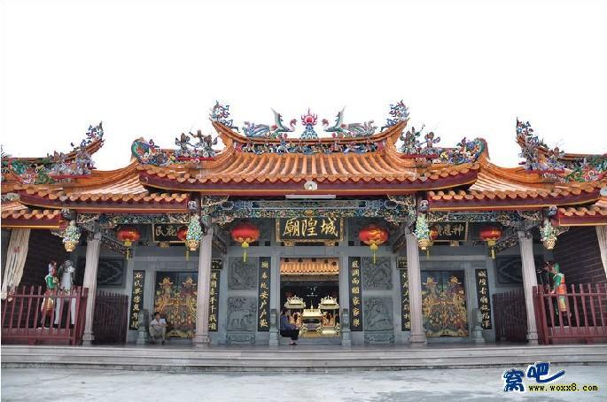
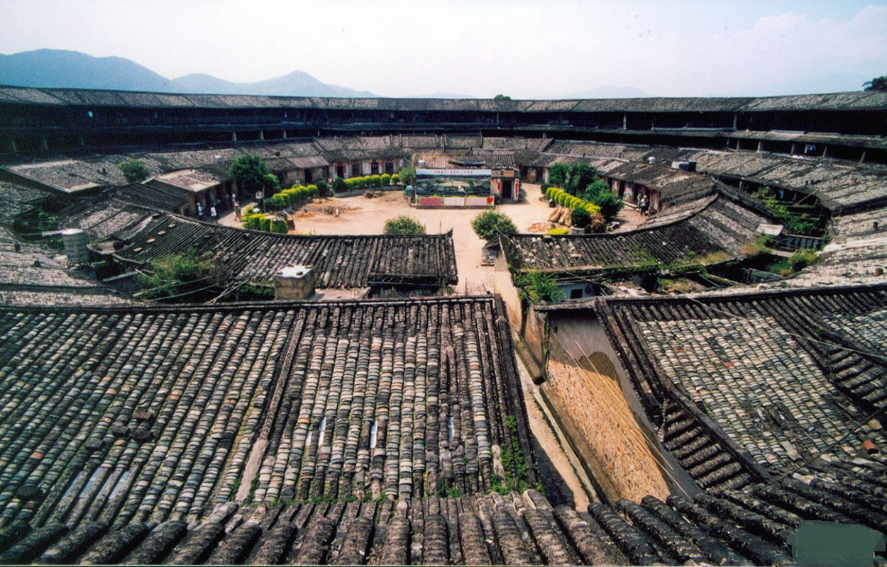
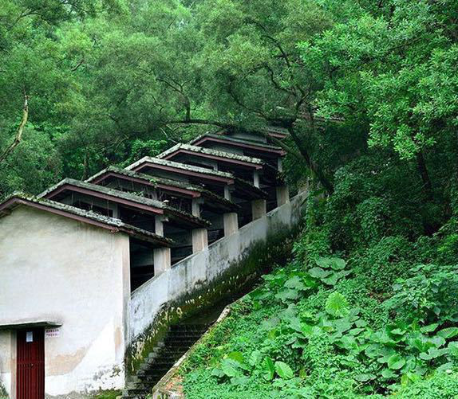
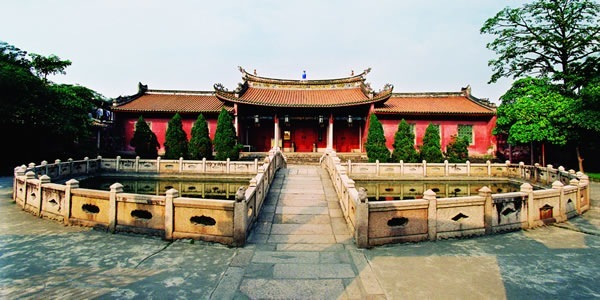

文物古迹
国家级文物保护单位:
潮州:广济桥、开元寺、许驸马府、己略黄公祠、从熙公祠、道韵楼、韩文公祠、笔架山潮州窑遗址。
省级重点文物保护单位:
潮州:海阳县儒学宫、凤凰塔、广济门城楼、王大宝墓、葫芦山摩崖石刻、涵碧楼、镇风塔、大埕所城、紫来楼、饶平土楼、黄冈丁未革命纪念亭。
汕头:崎碌炮台、广东东江各属行政委员公署旧址、国民革命东征军总指挥部、总政治部旧址;澄海区的大莱芜炮台、龟山建筑遗址、陈慈黉故居;潮阳区的大颠祖师塔、文光塔、莲花峰摩崖石刻、海门"万人冢"遗址;潮南区红场镇的大南山石刻革命标语、红宫、红场;南澳的猎屿铳城。
揭阳:揭阳学宫、城隍庙、关帝庙、进贤门、陈氏家庙、丁日昌旧居;揭西的打铁街、榕城打铜街等作坊群。普宁:洪阳培风塔、德安里、"八一"南昌起义南下部队指挥部军事决策会议旧址。
广东首批古村落(全省27个):澄海区隆都镇前美村，普宁市洪阳镇德安里，潮安县龙湖镇龙湖寨，澄海区莲下镇程洋冈村
广东第二批古村落(全省37个):普宁市燎原镇泥沟村、潮阳区贵屿镇南阳古村、澄海区隆都镇龙美村、潮安县古巷镇孚中村、潮州市潮安县古巷镇象埔寨、潮安县文祠镇李工坑村、潮安县凤凰镇后河村、揭阳市渔湖镇长美村
省级历史文化名城:揭西，普宁，揭阳
汕头历史街区:涵盖了开埠以来的传统亭台楼阁、骑楼、会馆、教堂、领事馆、学堂庭园等中西结合的建筑精品。
潮汕园林:潮阳西园，潮阳耐轩磊园，潮阳林园，澄海西塘，潮州莼园，葵潭大庚园。
其它主要古迹:普宁城隍庙、普宁学宫、马嘶岩寺、南岩古寺、盘龙阁、樟林古港、潮阳翠峰岩、灵山寺、宋大峰祖师风景区、礐石风景区、石炮台、南澳总兵府、揭西郭氏大楼、岗古寨、涵璧楼。
